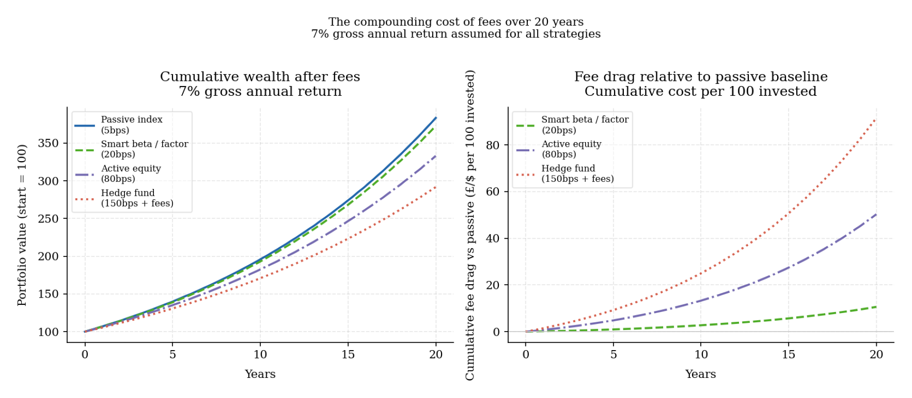
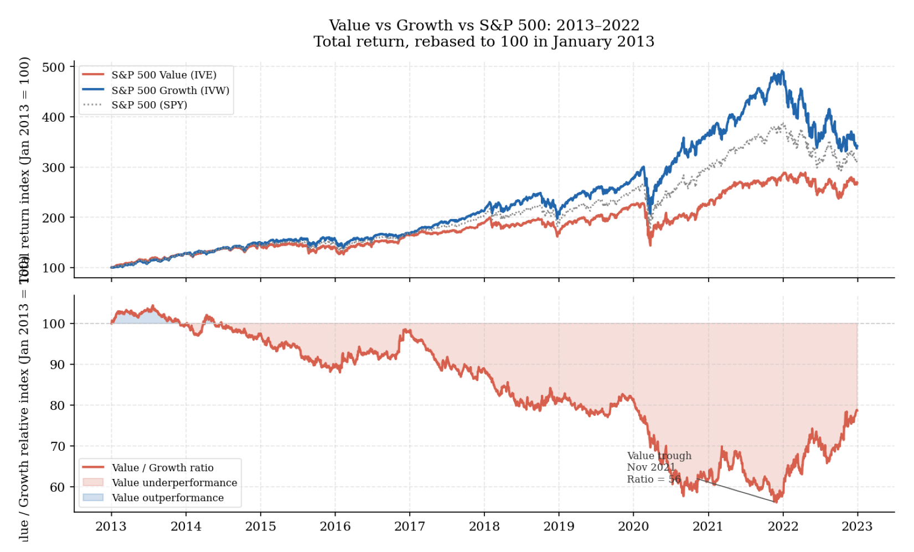

6. From core allocation to active programs
The preceding sections established what return sources exist, how to construct a portfolio around them, and what those return sources should earn given current conditions. What remains is the organizational question: how should capital actually be allocated across exposures, in what order, and against what standard? The answer is not complicated, but it is frequently reversed in practice. Most investment processes build a core around active positions rather than building active positions around a core. This section argues for the correct order and the standard it implies.
The core comes first
Before any active decision is made, the strategic allocation has already determined the portfolio’s dominant exposures. A portfolio that holds 80 percent in a broad equity index and 20 percent in cash has already accepted a specific sensitivity to equity risk, to economic cycles, to earnings volatility, and to the repricing of growth assets when real rates rise. Every subsequent decision operates within that sensitivity, not independently of it. An active sleeve generating 100 basis points of annual alpha in 10 percent of the portfolio contributes 10 basis points to total return. The strategic allocation decision affecting the remaining 90 percent contributes far more with every percentage point of variance it introduces. This arithmetic is why the design of the core matters more than any active decision made on top of it.
Brinson, Hood, and Beebower found that variation in asset allocation policy explained the large majority of variation in total portfolio returns across pension funds (Brinson et al., 1986). The practical core of that finding is durable regardless of how the decomposition is interpreted: the choice between equity-heavy, balanced, inflation-aware, and diversifying structures tends to matter more than the fine detail of what is held within those structures.
If the core is poorly designed — if it carries hidden concentration in the same growth-and-duration complex that dominates most balanced portfolios, or if it depends on a stock-bond correlation that is regime-conditional rather than structural — active additions will not repair it. A carefully designed momentum overlay sitting on top of a core that is 85 percent equity risk in disguise is still primarily an equity portfolio. When the equity regime turns, the overlay’s diversification value will be overwhelmed by the core’s dominant exposure.
A sound strategic core is not simply a broadly diversified, low-cost portfolio, though both are necessary properties. It is a portfolio that has answered four questions clearly enough to survive periods of stress without requiring structural redesign. What is the capital for? What drawdown can the portfolio actually tolerate in practice, accounting for redemption pressure and mandate review rather than stated risk appetite? What macro relationships does the core implicitly depend on — negative stock-bond correlation, contained inflation, a stable equity risk premium? And what level of simplicity is required for the structure to be maintained consistently under pressure? Complexity has genuine costs: more monitoring, more decision-making under stress, and more surface area over which errors accumulate (Ilmanen et al., 2018).
The architecture diagram below illustrates how these principles translate into a layered structure. The passive market exposure layer carries the largest risk budget at the lowest cost. Each subsequent layer requires a more demanding justification and introduces more operational complexity.
The cost of complexity and the hurdle it creates
Before any active program is added, its prospective contribution needs to be compared against a baseline that is honest about what passive exposure actually delivers and what active alternatives actually cost.
The passive baseline is more demanding than is usually acknowledged. A globally diversified equity index has delivered long-run real returns of approximately 5 to 6 percent annually after inflation. A simple 60/40 combination has historically produced Sharpe ratios of approximately 0.4 to 0.5 over long samples, with maximum drawdowns of 30 to 40 percent in severe episodes. This baseline is available at 3 to 10 basis points of annual fee through broad index ETFs.
The all-in cost of active alternatives is substantially higher than the management fee alone. Bogle identified four cost layers: the management fee, transaction costs from higher turnover, the tax drag from realizing gains more frequently, and the advisory, due diligence, and monitoring burden that accompanies active mandates (Bogle, 2018). When all four are included, the effective annual cost of a typical active equity mandate is often 150 basis points or more rather than the stated management fee. For a hedge fund structure with a 1.5 percent management fee and a 20 percent performance allocation, the effective all-in cost can reach 300 to 400 basis points in good years, with the asymmetry of the performance fee working systematically against the investor.
This cost structure sets a specific hurdle. The chart below shows what fee drag compounding means over 20 years, assuming 7 percent gross annual return. The passive index at 5 basis points is the baseline. An active equity fund at 80 basis points leaves the investor with approximately 15 percent less wealth after 20 years. A hedge fund at 150 basis points leaves approximately 25 percent less. These are not marginal differences — they are often the dominant driver of long-run return outcomes once compound interest is applied to the fee gap.

When an active layer earns its place
None of this argues against active management categorically. It argues for a stricter standard of justification before active risk is added. An active layer earns its place through one of four mechanisms, and the investor should be able to identify which one applies before allocating capital.
The first is a genuine improvement in expected return — not relative to recent history, but relative to the forward-looking estimate from section 5. A factor-tilted equity strategy at 15 basis points that introduces genuine value or quality exposure not captured in the cap-weighted index may meet this standard for many investors. A discretionary equity long-short fund at 150 basis points plus 20 percent of performance, based on a three-year track record, does not meet it without considerably more evidence.
The second is diversification — introducing a return source whose drivers differ enough from the core that the combination produces a better distribution of outcomes. A trend-following program has historically shown negative to low correlation with equity drawdowns and has performed best in prolonged dislocations — precisely the periods when a growth-and-duration core performs worst (Ooi et al., n.d.). Its standalone expected return is moderate. Its contribution to a core-plus portfolio, evaluated through the construction lens of section 4, can be meaningfully positive even when its standalone Sharpe is unimpressive.
The third is capital efficiency — expressing a view through instruments that use less balance-sheet capital, freeing the remainder for other exposures. Futures overlays, derivatives-based tail protection, and currency hedges all belong to this category when properly structured.
The fourth is downside protection — reducing the portfolio’s exposure to a specific risk the core carries too heavily. These additions will often cost carry in calm regimes and pay substantially in stress. The justification is asymmetric: they are not there to improve average return but to improve survivability in the scenarios that are most damaging.
The table below summarizes these four justifications alongside the evidence required for each, the typical cost structure, and the specific failure mode that most commonly undermines each rationale in practice.

The ES Core Relative Allocation documented in section 7 was designed against exactly these four justifications. It addresses diversification relative to a passive equity core — the tactical rotation across six futures instruments produces a return profile that differs from static buy-and-hold equity. It addresses capital efficiency — futures require margin rather than full capital, and the dynamic leverage mechanism allows the strategy to scale exposure in proportion to signal confidence. It addresses expected return improvement through a forward-looking signal rather than historical extrapolation. Whether it meets the required standard of evidence is precisely what section 7 presents.
The evaluation horizon matters as much as the evidence
The argument for any active program is always easier to make before it has experienced adversity than during it. This is not a psychological observation — it is a structural feature of how returns are distributed. Most strategies that add genuine long-run value experience periods of significant underperformance relative to their benchmark. Those periods are not evidence of failure. They are the cost of holding a return source that is not perfectly correlated with everything else in the portfolio.
The chart below shows value factor performance alongside the broader market from 2013 to 2022. Value underperformed growth severely from 2017 through early 2021 — a period of approximately four years during which the strategy was analytically intact but producing poor relative returns. Many institutional allocators reduced or eliminated their value exposure near the trough, precisely when the subsequent partial recovery would have rewarded patience.

The evaluation standard for any active program should therefore be set before the allocation is made, not revised in response to recent performance. What is the expected underperformance profile of this strategy during adverse conditions? Over what horizon should it be evaluated? What evidence would indicate genuine signal failure rather than normal variance? For the ES Core Relative Allocation, section 7 provides explicit answers to each of these questions — including the regime decomposition that shows where the strategy is structurally expected to lose money, and why that loss is a predictable feature of the design rather than evidence that the thesis is broken.
References
Bogle, J. C. (2018). The arithmetic of “all-in” investment expenses. Financial Analysts Journal, 74(1), 14–21. https://www.cfainstitute.org/en/research/financial-analysts-journal/2018/the-arithmetic-of-all-in-investment-expenses
Brinson, G. P., Hood, L. R., & Beebower, G. L. (1986). Determinants of portfolio performance. Financial Analysts Journal, 42(4), 39–44.
Ilmanen, A., Israel, R., Moskowitz, T. J., Thapar, A., & Heuvel, O. van den. (2018). Diversification during a century of drawdowns. AQR Alternative Thinking. https://www.aqr.com/-/media/AQR/Documents/Alternative-Thinking/AQR-Alternative-Thinking-3Q18---Diversification-During-a-Century-of-Drawdowns.pdf
Ooi, Y. H., Hutchison, M., & Pedersen, L. H. (n.d.). Trend-following and crisis alpha. AQR White Paper. Retrieved https://www.aqr.com/-/media/AQR/Documents/Insights/White-Papers/Trend-Following-and-Crisis-Alpha.pdf